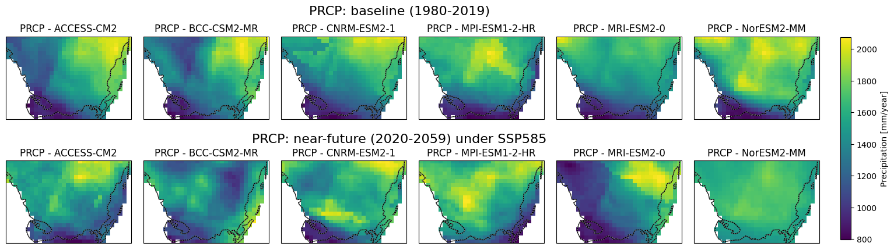
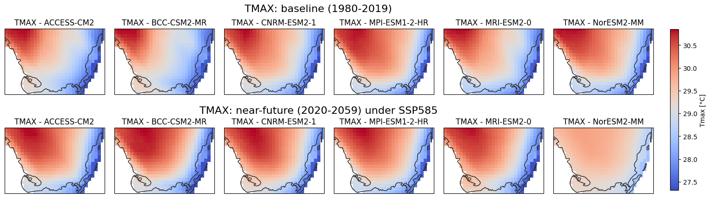
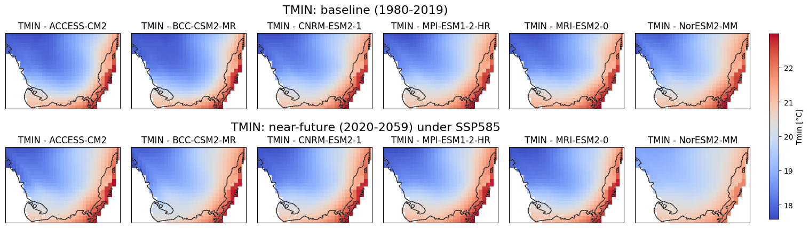
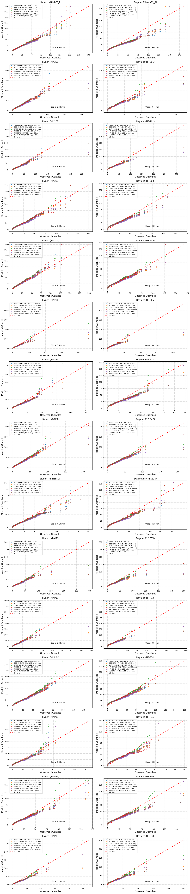

GCMs data#
Global Climate Models (GCMs) are crucial tools for understanding and predicting the impacts of climate change on various systems. Several sources provide GCM-based projections, each with unique characteristics suited to different scales and regions. For assessing climate impacts in South Florida, it is essential to consider sources that can provide high-resolution data for local dynamics.
CMIP6-based Multi-model Hydroclimate Projection over the Conterminous US, Version 1.1#
This dataset presents a suite of high-resolution downscaled hydro-climate projections over the conterminous United States (CONUS) based on multiple selected Global Climate Models (GCMs) from the Coupled Models Intercomparison Project phase 6 (CMIP6). The CMIP6 GCMs are downscaled using either statistical (DBCCA) or dynamical (RegCM) downscaling approaches based on two meteorological reference datasets (Daymet and Livneh). Subsequently, the downscaled precipitation, temperature, and wind speed are employed to drive two calibrated hydrologic models (VIC and PRMS), enabling the simulation of projected future hydrologic responses across the CONUS. Each ensemble member covers the 1980-2019 baseline and 2020-2059 near-future periods under the high-end (SSP585) emission scenario. Moreover, utilizing only DBCCA and Daymet, the projections are further extended to the 2060-2099 far-future period and across three additional emission scenarios (SSP370, SSP245, and SSP126). This dataset is formulated to support the SECURE Water Act Section 9505 Assessment for the US Department of Energy (DOE) Water Power Technologies Office (WPTO). For further details on this dataset, please refer to Kao et al. (2022) and Rastogi et al. (2022)
The data can be accessed at: https://hydrosource.ornl.gov/data/datasets/9505v3_1/ory.
Visualization of Baseline and Near-Future Precipitation, Tmax. Tmin Projections for Soth Florida#
This script generates precipitation, Tmax and Tmin maps using data from multiple climate models under different time periods and scenarios which is sourced from CONUS. The maps cover South Florida’s geographical region and display total annual precipitation, mean Tmax and Tmin for two distinct periods: 1980-2019 (baseline) and 2020-2059 (near-future). The data is extracted from NetCDF files for six different global climate models (GCMs) under the SSP5-8.5 scenario. Each model is visualized in a subplot, with common color scales applied to facilitate comparison. A single color bar is added to represent each variable, and the figure is saved as a high-resolution image for each variable.
import xarray as xr
import matplotlib.pyplot as plt
import cartopy.crs as ccrs
import cartopy.feature as cfeature
# Define Florida's bounding box
florida_bounds = {
'lon_min': -81.39207,
'lon_max': -80.09851,
'lat_min': 25.10831,
'lat_max': 25.96406
}
#upper_left -81.39207 25.96406
#upper_right -80.09851 25.96406
#lower_right -80.09851 25.10831
#lower_left -81.39207 25.10831
# PC, Tmax, and Tmin variables setup (common code block)
variables = ['prcp', 'tmax', 'tmin'] # List of variables to loop over
# Define the model names
model_names = [
'ACCESS-CM2', 'BCC-CSM2-MR', 'CNRM-ESM2-1',
'MPI-ESM1-2-HR', 'MRI-ESM2-0', 'NorESM2-MM',
'ACCESS-CM2', 'BCC-CSM2-MR', 'CNRM-ESM2-1',
'MPI-ESM1-2-HR', 'MRI-ESM2-0', 'NorESM2-MM'
]
# Units setup based on variables
units = {
'prcp': 'Precipitation [mm/year]',
'tmax': 'Tmax [°C]',
'tmin': 'Tmin [°C]'
}
for variable in variables:
# Paths to the NetCDF files based on variable
file_paths = [
f'C:/Users/mgebremedhin/Documents/FGCU/Notebook/PCP/ACCESS-CM2_ssp585_r1i1p1f1_RegCM_Daymet_VIC4_{variable}_yr_1980_2019.nc',
f'C:/Users/mgebremedhin/Documents/FGCU/Notebook/PCP/BCC-CSM2-MR_ssp585_r1i1p1f1_RegCM_Daymet_VIC4_{variable}_yr_1980_2019.nc',
f'C:/Users/mgebremedhin/Documents/FGCU/Notebook/PCP/CNRM-ESM2-1_ssp585_r1i1p1f2_RegCM_Daymet_VIC4_{variable}_yr_1980_2019.nc',
f'C:/Users/mgebremedhin/Documents/FGCU/Notebook/PCP/MPI-ESM1-2-HR_ssp585_r1i1p1f1_RegCM_Daymet_VIC4_{variable}_yr_1980_2019.nc',
f'C:/Users/mgebremedhin/Documents/FGCU/Notebook/PCP/MRI-ESM2-0_ssp585_r1i1p1f1_RegCM_Daymet_VIC4_{variable}_yr_1980_2019.nc',
f'C:/Users/mgebremedhin/Documents/FGCU/Notebook/PCP/NorESM2-MM_ssp585_r1i1p1f1_RegCM_Daymet_VIC4_{variable}_yr_1980_2019.nc',
f'C:/Users/mgebremedhin/Documents/FGCU/Notebook/PCP/ACCESS-CM2_ssp585_r1i1p1f1_RegCM_Daymet_VIC4_{variable}_yr_2020_2059.nc',
f'C:/Users/mgebremedhin/Documents/FGCU/Notebook/PCP/BCC-CSM2-MR_ssp585_r1i1p1f1_RegCM_Daymet_VIC4_{variable}_yr_2020_2059.nc',
f'C:/Users/mgebremedhin/Documents/FGCU/Notebook/PCP/CNRM-ESM2-1_ssp585_r1i1p1f2_RegCM_Daymet_VIC4_{variable}_yr_2020_2059.nc',
f'C:/Users/mgebremedhin/Documents/FGCU/Notebook/PCP/MPI-ESM1-2-HR_ssp585_r1i1p1f1_RegCM_Daymet_VIC4_{variable}_yr_2020_2059.nc',
f'C:/Users/mgebremedhin/Documents/FGCU/Notebook/PCP/MRI-ESM2-0_ssp585_r1i1p1f1_RegCM_Daymet_VIC4_{variable}_yr_2020_2059.nc',
f'C:/Users/mgebremedhin/Documents/FGCU/Notebook/PCP/NorESM2-MM_ssp585_r1i1p1f1_RegCM_Daymet_VIC4_{variable}_yr_2020_2059.nc'
]
# Set up plotting grid
fig, axes = plt.subplots(2, 6, figsize=(18, 6), subplot_kw={'projection': ccrs.PlateCarree()})
axes = axes.flatten()
data_ranges = [] # To determine min and max across all data
for idx, file_path in enumerate(file_paths):
# Open dataset and select the data slice
ds = xr.open_dataset(file_path, decode_times=False)
data_slice = ds[variable].sel(
lon=slice(florida_bounds['lon_min'], florida_bounds['lon_max']),
lat=slice(florida_bounds['lat_min'], florida_bounds['lat_max'])
).isel(time=0) # Select first time step
data_ranges.append((float(data_slice.min()), float(data_slice.max())))
# Plot the data slice
im = axes[idx].pcolormesh(
data_slice['lon'], data_slice['lat'], data_slice,
cmap='viridis' if variable == 'prcp' else 'coolwarm', shading='auto', transform=ccrs.PlateCarree()
)
axes[idx].coastlines()
axes[idx].add_feature(cfeature.BORDERS, linestyle=':')
axes[idx].add_feature(cfeature.STATES, linestyle=':', edgecolor='gray')
axes[idx].set_extent([florida_bounds['lon_min'], florida_bounds['lon_max'],
florida_bounds['lat_min'], florida_bounds['lat_max']], crs=ccrs.PlateCarree())
axes[idx].set_title(f'{variable.upper()} - {model_names[idx]}')
# Close dataset
ds.close()
# Determine common color scale based on combined data range
vmin = min(r[0] for r in data_ranges)
vmax = max(r[1] for r in data_ranges)
# Re-scale all plots to common color range
for ax in axes:
if ax.collections: # Ensure the axis has a plot
im.set_clim(vmin, vmax)
# Add a single color bar with adjusted fraction and pad
cax = fig.add_axes([0.92, 0.28, 0.01, 0.58]) # Adjust the position and size of the colorbar
cbar = fig.colorbar(im, cax=cax, orientation='vertical')
cbar.set_label(f"{units[variable]}") # Update the label based on your datasets' units
# Add common titles for the first six and next six figures
fig.suptitle(f'{variable.upper()}: baseline (1980-2019)', fontsize=16, y=0.95)
fig.text(0.5, 0.55, f'{variable.upper()}: near-future (2020-2059) under SSP585', ha='center', va='bottom', fontsize=16)
# Adjust spacing to narrow the distance between the rows and columns
plt.subplots_adjust(hspace=0.3, wspace=0.1, bottom=0.25)
# Save the figure
plt.savefig(f'{variable.upper()}_Baseline_Near-Future_{variable.upper()}.png', dpi=300, bbox_inches='tight')
# Display the plot
plt.show()



Code Summary: Downloading and Saving NetCDF Files (Baseline)#
This Python script downloads precipitation (or any other variable) data in NetCDF format for different climate models and years, and saves it to specified local directories. The main functions of the script are:
Functions#
download_netcdf(url)#
Downloads a NetCDF file from the given URL.
Returns the content as a
BytesIOobject for further processing.
download_and_save_netcdf(models, base_url, variable_name, years, output_path)#
Loops through the list of models and years.
Constructs the URL for each model-year combination based on the base URL and other parameters.
Downloads the corresponding NetCDF file using the
download_netcdffunction.Opens the NetCDF file using
xarrayand saves it to a specified output directory in NetCDF format.
Example Usage#
Model Names: A list of climate models (
ACCESS-CM2,BCC-CSM2-MR, etc.) for which data is to be downloaded.Base URL: The base URL for accessing the NetCDF files from the server.
Variable Name: The name of the variable (e.g.,
prcpfor precipitation).Years: The list of years for which the data is to be downloaded (e.g., 1980, 1981).
Output Directory: The directory where the downloaded NetCDF files will be saved.
The code ensures that the output directory exists, and for each year-model combination, it downloads and saves the NetCDF file.
Key Notes:#
The output files are saved with the format
model_ssp585_variant_RegCM_Daymet_VIC4_variable_year.ncin the specified directory.
import requests
import xarray as xr
import io
def fetch_netcdf_from_url(url):
"""Fetch the NetCDF file from the given URL."""
response = requests.get(url)
if response.status_code == 200:
return io.BytesIO(response.content)
else:
raise Exception(f"Failed to download NetCDF file. Status code: {response.status_code}")
def average_prcp_for_year(models, base_url, variable_name, year):
"""Average precipitation data from multiple NetCDF files for a specific year."""
# List to store precipitation data
prcp_list = []
for model in models:
# Determine variant label
variant_label = "r1i1p1f2" if model == "CNRM-ESM2-1" else "r1i1p1f1"
# Construct the URL for the model, use Daymet or Livneh
url = f"{base_url}/{model}_ssp585_{variant_label}_RegCM_Livneh/{variable_name}/{model}_ssp585_{variant_label}_RegCM_Livneh_VIC4_{variable_name}_{year}.nc"
print(f"Fetching data from: {url}") # Debugging: Print the URL
# Fetch the NetCDF file
netcdf_file = fetch_netcdf_from_url(url)
# Read the NetCDF dataset
ds = xr.open_dataset(netcdf_file)
# Check if the variable exists
if variable_name not in ds.variables:
raise Exception(f"'{variable_name}' variable not found in {url}")
# Adjust names of lat/lon and time if needed
lat_name = 'lat'
lon_name = 'lon'
time_name = 'time'
if lat_name not in ds.variables or lon_name not in ds.variables or time_name not in ds.variables:
raise Exception("Latitude, longitude, or time dimensions not found in the dataset.")
# Filter data for the year
year_data = ds.sel(
{time_name: ds[time_name].dt.year == year}
)
# Append the prcp data to the list
prcp_list.append(year_data[variable_name])
# Compute the average across all models
prcp_average = xr.concat(prcp_list, dim='model').mean(dim='model')
return prcp_average
# Define model names, base URL, and other parameters
models = [
'ACCESS-CM2', 'BCC-CSM2-MR', 'CNRM-ESM2-1',
'MPI-ESM1-2-HR', 'MRI-ESM2-0', 'NorESM2-MM',
]
base_url = "https://hydroshare.ornl.gov/files/9505/SWA9505V3"
variable_name = "prcp"
# Loop over the years 1980 to 2019 and save averaged precipitation data
for year in range(2051, 2059):
prcp_average = average_prcp_for_year(models, base_url, variable_name, year)
output_filename = f"C:/Users/mgebremedhin/OneDrive - Florida Gulf Coast University/FGCU_Mewcha_Data/Livneh/Future/{year}.nc"
prcp_average.to_netcdf(output_filename)
print(f"Averaged precipitation data for {year} has been saved to {output_filename}.")
Precipitation validation#
This Python script performs a statistical comparison between observed and downscaled rainfall data across multiple stations using Q-Q (quantile-quantile) plots. It utilizes Pandas for data handling, NumPy for numerical operations, Matplotlib for visualization, and SciPy & Scikit-Learn for statistical analysis.
import pandas as pd
import numpy as np
import matplotlib.pyplot as plt
from scipy.stats import ks_2samp
from sklearn.metrics import mean_squared_error, mean_absolute_error, r2_score
# Define file paths for all stations
stations = ["MIAMI-FS_R","NP-201", "NP-202", "NP-203", "NP-205", "NP-206", "NP-A13",
"NP-FMB", "NP-NESS20", "NP-OT3", "NP-P33", "NP-P34", "NP-P35", "NP-P36", "NP-P38"]
file_paths = {}
for station in stations:
file_paths[f"Livneh ({station})"] = f"C:/Users/mgebremedhin/Documents/FGCU/BISECT/PostProcessing/RCM_Validation/Livneh/{station}_L_2011_2019.csv"
file_paths[f"Daymet ({station})"] = f"C:/Users/mgebremedhin/Documents/FGCU/BISECT/PostProcessing/RCM_Validation/Daymet/{station}_D_2011_2019.csv"
# Define columns of interest
models = ['ACCESS-CM2', 'BCC-CSM2-MR', 'CNRM-ESM2-1', 'MPI-ESM1-2-HR', 'MRI-ESM2-0', 'NorESM2-MM']
observed_col = 'Observed'
# Function to load data and drop NaNs
def load_and_clean_data(file_path):
df = pd.read_csv(file_path)
df = df.dropna(subset=[observed_col] + models)
return df
# Load all datasets
dataframes = {name: load_and_clean_data(path) for name, path in file_paths.items()}
# Set up a grid for Q-Q plots
fig, axes = plt.subplots(15, 2, figsize=(15,70))
axes = axes.flatten()
# Loop over datasets and axes
for (title, df), ax in zip(dataframes.items(), axes):
mean_observed = df[observed_col].mean() # Compute mean observed rainfall
for model in models:
observed = np.sort(df[observed_col])
modeled = np.sort(df[model])
# Compute RMSE, MAE, and Mean
rmse = np.sqrt(mean_squared_error(observed, modeled))
mae = mean_absolute_error(observed, modeled)
r2 = r2_score(observed, modeled)
mean_model = df[model].mean()
# Compute quantiles
quantiles = np.linspace(0, 1, len(observed))
obs_quantiles = np.quantile(observed, quantiles)
mod_quantiles = np.quantile(modeled, quantiles)
# Q-Q plot
ax.scatter(obs_quantiles, mod_quantiles, s=15, alpha=0.8,
label=f"{model} (MAE:{mae:.2f}, µ:{mean_model:.2f} mm)")
# Plot 1:1 reference line
max_val = max(df[observed_col].max(), df[models].max().max())
ax.plot([0, max_val], [0, max_val], 'r--', label='1:1 Line')
# Formatting
ax.set_xlabel("Observed Quantiles", fontsize=12)
ax.set_ylabel("Modeled Quantiles", fontsize=12)
ax.set_title(f"{title}", fontsize=12)
ax.legend(loc="upper left", fontsize=8)
ax.text(0.5, 0.1, f"Obs µ: {mean_observed:.2f} mm",
transform=ax.transAxes, fontsize=10, color='black', fontweight='regular')
ax.grid(True, linestyle="--", alpha=0.5)
# Adjust layout and show the plot
plt.tight_layout()
plt.savefig("C:/Users/mgebremedhin/Documents/FGCU/BISECT/PostProcessing/RCM_Validation/Figures/Q-Q_Plot.png")
plt.show()

GeoTIFF files into a single .dat file#
This Python script processes multiple GeoTIFF files from a specified directory and combines their data into a single .dat file. The code is designed to handle thousands of TIFF files efficiently and outputs a formatted text file with rows prefixed by a unique column code for each TIFF file, which is in the format required by BISECT model
import numpy as np
import rasterio
import os
# Define fixed grid dimensions
cols, rows = 259, 186 # 259 columns × 186 rows
cell_size = 500 # Original grid resolution in meters
# Define new zone resolution
x_res, y_res = 500, 500 # Resolution in meters
zone_cols = cols // (x_res // cell_size)
zone_rows = rows // (y_res // cell_size)
num_zones = zone_cols * zone_rows
# Path to folder containing rainfall raster files
raster_folder = "C:/Users/mgebremedhin/OneDrive - Florida Gulf Coast University/FGCU_Mewcha_Data/Livneh/Model_based/SD/baseline/Tiff_MRI-ESM2-0"
# Get a sorted list of all .tif files
raster_files = sorted([os.path.join(raster_folder, f) for f in os.listdir(raster_folder) if f.endswith('.tif')])
# Output file path
output_file = "C:/Users/mgebremedhin/Documents/FGCU/BISECT/PostProcessing/BISECT_Rainfall_Input/Zones/inputrain_6_hr_SD_baseline500_MRI-ESM2-0_2011_2019.dat"
# Compute zone indices, ensuring bottom-left origin
def get_zone_indices():
zones = []
for i in range(zone_rows): # Start from the bottom row
for j in range(zone_cols):
col_start = j * (x_res // cell_size) + 1
col_end = min((j + 1) * (x_res // cell_size), cols)
row_start = rows - (i + 1) * (y_res // cell_size) + 1 # Reverse row index
row_end = min(rows - i * (y_res // cell_size), rows)
zones.append((col_start, col_end, row_start, row_end))
return zones
zones = get_zone_indices()
# Compute average rainfall per zone
def get_zone_average(data, col_start, col_end, row_start, row_end):
zone_data = data[row_start-1:row_end, col_start-1:col_end]
return np.nanmean(zone_data) if not np.isnan(zone_data).all() else 0
# Open output file for writing
with open(output_file, "w") as file:
# Write grid cell information in the required format
for idx, (col_start, col_end, row_start, row_end) in enumerate(zones, start=1):
file.write(f"{idx}\n1\n{col_start} {col_end} {row_start} {row_end}\n")
# End of header section
file.write("0\n")
file.write("1.00," + ",".join(["0."] * len(zones)) + "\n")
# Process each raster file
for i, raster_file in enumerate(raster_files, start=1):
with rasterio.open(raster_file) as src:
data = src.read(1) # Read the first (only) band
data = np.where(data == src.nodata, np.nan, data) / 86400000 # Convert mm/day to m/second
# Generate time step labels
row_codes = [f"{i + base:.2f}" for base in [0.21, 0.46, 0.71, 0.96]]
# Write rainfall data four times for each time step (without trailing comma)
for row_code in row_codes:
values = [f"{get_zone_average(data, col_start, col_end, row_start, row_end):.2E}" for col_start, col_end, row_start, row_end in zones]
file.write(f"{row_code}," + ",".join(values) + "\n")
print(f"Rainfall input file for each zone generated: {output_file}")